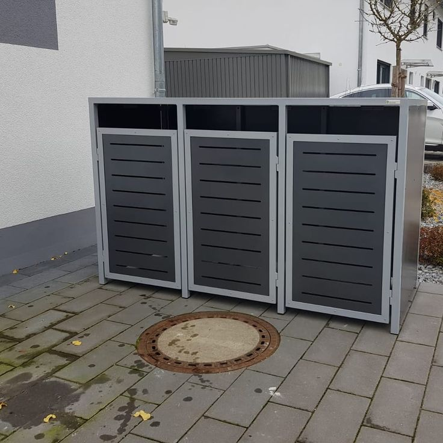

Smart Solar Bin sangat ideal digunakan di berbagai lokasi, termasuk area dengan akses listrik terbatas seperti taman kota, area wisata, atau jalan-jalan umum. Hal ini mendukung pengurangan jejak karbon sekaligus memberikan solusi yang efisien untuk pengelolaan sampah secara berkelanjutan.

Menggunakan panel surya sebagai sumber energi utama, sehingga ramah lingkungan dan tidak memerlukan listrik eksternal.
Dilengkapi dengan sensor yang dapat mendeteksi kapasitas sampah secara real-time dan mengirimkan notifikasi ke pengelola saat sudah penuh, mempermudah pengelolaan.
Mampu memisahkan sampah organik dan anorganik secara otomatis, mendukung proses daur ulang dan pengelolaan limbah yang lebih efisien.
Memiliki tampilan yang estetis, cocok untuk berbagai lokasi seperti taman kota, pusat perbelanjaan, dan kawasan wisata, sekaligus meningkatkan nilai visual area tersebut.
Mengurangi jejak karbon dengan memanfaatkan energi surya dan membantu mengurangi tumpukan sampah di ruang publik.
Cocok ditempatkan di area dengan akses listrik terbatas, seperti taman kota, pantai, atau kawasan wisata terpencil.